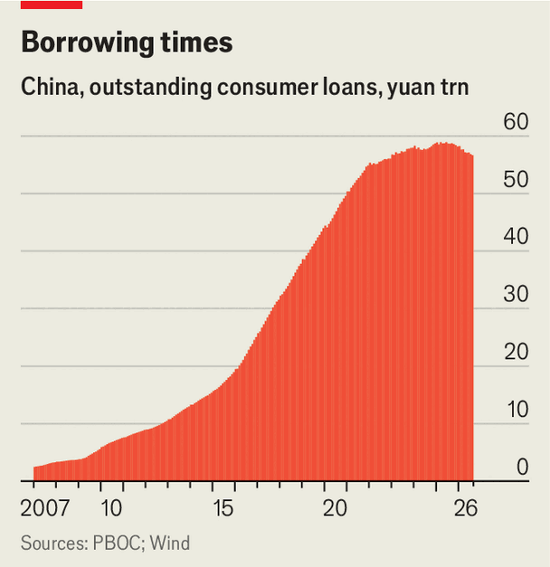

Another warning sign for China’s economy: falling consumer credit
A crackdown on aggressive debt collectors is good news and bad news
Oct 15th 2026
CHINA’s FRUGAL citizens are getting more so. Lending to households has been shrinking for most of the year. Short-term loans to consumers fell by 8.3% in September compared with the year before, the steepest drop on record. In August the stock of consumer loans was the lowest since China’s harsh “zero-covid” lockdowns (see chart). During a public holiday at the start of October the typical merrymaker spent 2% less than in the same festive period in 2025. China’s retailers have the right to feel disappointed. So does the government, which has been trying to loosen households’ purse-strings since the pandemic.

The Chinese are borrowing less in part because of the prolonged property crash. A collapse in house sales means fewer mortgage applications. Many homebuyers pay back their mortgages early if they can. Given that a home loan is the biggest that most people take out, this prudence has put paid to a rise in households’ indebtedness that had lasted for decades. The ratio of their debt to GDP hit 60% in 2020 and stayed flat until last year, when it declined slightly. (In rich countries as a whole, the ratio is just shy of 70%.)
Yet that does not explain the decline in consumer credit. This may have little to do with shoppers’ frugality—or with the government’s. In a belated effort to boost domestic consumption, last year the ministry of finance began handing out subsidies to banks that let them charge lower interest on consumer loans for big-ticket items such as new cars and home renovations.
Even so, banks are growing more reluctant to extend such loans. And who can blame them? Chinese borrowers appear to be getting riskier. More than 10% of adults may have had unpaid debts last year, up from less than 8% the year before, calculates Gavekal, a consultancy.
The subsidy may be making lenders even warier. When the average Zhou struggles to pay back loans, interest rates on consumer credit should rise, to offset the higher risk to banks, rather than fall. Since refusing the government’s largesse is unwise in China, banks end up underpricing the risk to their loan books. To keep that risk in check, they are screening out more borderline borrowers.
Another reason for banks’ increased risk-aversion is the difficulty of offloading bad consumer debts. They often seek to free up their balance-sheets by selling such sour assets to investors with a higher risk tolerance. These investors pay the banks a fraction of the loans’ face value and then try to recover the full amount from borrowers, which often involves pestering them until they cough up. In early 2021 the average price banks could fetch for overdue consumer loans was around 30% of face value, decent for debts already known to be troubled. By early 2026 that figure had collapsed to 5%.
This is a worrying trend. It seems to indicate that once consumer loans are delinquent, fewer borrowers have any intention of paying them back. And that, in turn, may be the unintended consequence of a government policy that is otherwise welcome—a crackdown on gang-like debt-collection agencies that have been terrorising debtors for years.
China’s debt collectors are certainly a fearsome bunch. With few rules or industry guidelines, small collection companies have often resorted to what the Chinese refer to as “soft violence” in order to retrieve overdue consumer loans and credit-card debts. Common tactics include “calling you to death”, shorthand for ringing debtors, their families and friends hundreds of times a day; releasing credit histories to loved ones or employers; and even creating obscene images that are sent to debtors’ acquaintances. Collectors would often show up on debtors’ doorsteps in the middle of the night.
Such intimidation can have tragic consequences. Stories of debtors who have taken their own lives as a result of it have become common in recent years. The authorities have previously tried to curb loan collectors’ excesses with lawsuits against the worst offenders. This year they went a step further, putting in place national rules to stop bad behaviour. Starting in August the collectors can place no more than six phone calls a day to debtors. They are also barred from contacting family and friends, and from making home visits in the small hours. All interactions between the collectors and debtors must be recorded.
Some analysts have started to connect the steep discounts on consumer-debt sales with the crackdown on collections. The new regulations are meant to protect borrowers from harassment. A side-effect may be fewer borrowers for the collectors to harass in the first place. ■